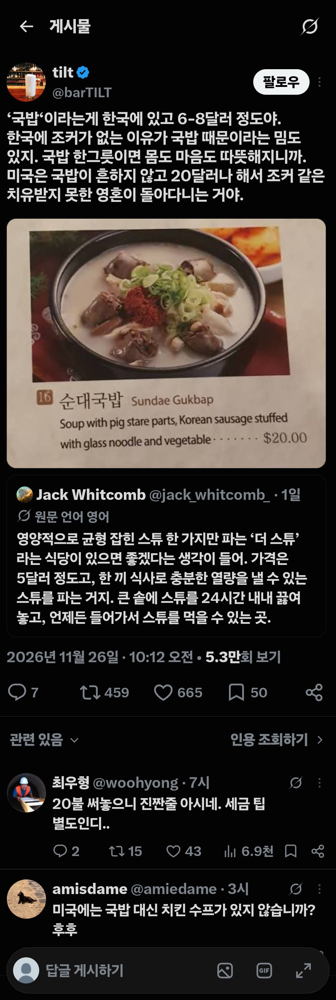

한국에 조커가 없는 이유
댓글
순대국밥 킹다귀갓장국 양평해장국. 하다못해 콩나물 국밥까지 존나 높네 ㅋㅋ
치킨수프.. 미국에는 닭곰탕이 있구나
그러게 닯을 푹고으는건 똑같은데
아예 다른 요리가나오네ㅋㅋ
요샌 국밥도 부담스럽다..
그래도 아직은 국밥만한게 없다.. 비슷한 가격에 비슷한 영양균형이면 버거정도?
국밥+소주가 최소 1.5가 되어버려서 그냥 집에서 먹는 경우가 많아진 거 같아
우리 동네에 잘 되는 국밥집이 있는데 요즘은 진짜 혼술 하는 사람이 안 보이더라
옛날에는 진짜 혼술하는 사람들 넘쳤었느데....
난 소주는 가격에 포함한 적 없는데 소주까지 넣으면 어떤 음식이라도 비싸지 않을까.. 쌩으로 4천원 추간데
아 그렇구나 ㅋㅋㅋㅋ
위에 혼술 댓글들 보다가 그냥 정신 없이 댓글 썼더니 ㅋㅋㅋㅋㅋ
요즘.. 냉동국밥이 워낙 잘나와서 밖에서 못먹겠어 집에서 국밥소주면 6~7천원캇인데
그놈의 팁, 세종시의 어느 장어 식당은 되지도 않는 팁 요구 글을 식탁에 올려놨다가 치웠는데 언제부턴가 주인이 바뀌었군. 사실일까?
주 소비세, 팁 별도라는게 ㅈㄴ 무섭다
팁 문화가 ㄹㅇ 다 망치는 것 같음
국밥이 2만 7천원이고 팁 세금 별도라면
조커 될만도 한
조커도 군대보내서 죽기 직전까지 갈궈서 기죽여놓음
미국에서 국밥 먹다가도 팁 내놓으라하면 조커된다
어......식재료 자체는 쟤들이 더 싸지 않나....?
하지만 인건비는 따따불이죠
식재료 싸지... 하지만 운송비는 비싸다
코리안조커 약장수 안보셨나
두번째놈은 중세 마니아일듯
역시한국이최고지 국밥갤럭시현대차네이버레츠고
일본도 스키야 같은데서 혼맥 많이하더라 아저씨들
메가하나 시켜놓고 주구장창
우리나라에서 은근슬쩍 팁 제도 넣으려는 가게 사장들 단두대로 머리 쳐야 됨
머레이, 당신은 무례한 사람이에요
내 국밥에 깍두기 국물을 맘대로 부었잖아요
마 니 국빱 물 줄 모리나 으이? 다대기 늫고 으이? 재래기 늫고 으이? 깍두기 궁물 따악 느야 간이 딱 맞는다 자 이제 무바라
총 맞을만 했다
여기 육개장이 33불인데 시발
24시간 국밥집 미국에서 하면 장사잘되려나 궁금하네
뻑예 하면 묵은게 내려가는 기분이긴 해 ㅋㅋㅋㅋㅋㅋ
황태해장국 으어 뻑예
한국 외식물가는 소득 고려해도 진짜 싼거임. 국밥도 만원 넘어서 점심으로 먹기 부담스럽다는데 애초에 다른나라에선 매일 점심을 사먹는다는게 말도 안되는거임. 저녁 좀 넉넉하게 만들어서 도시락통에 담아서 다음날 가져가서 점심으로 해결하는게 보통임
외식물가는 일본이 정신 나갔지
얼마나 국밥이 좋으면 이름이 국밥인 캐릭터가 있을 지경
국밥 아리가또
근데 맛있는데는 없어지고 있음 고기며 내장이면 존나 뻣뻣하고
혼술 자주 가던 단골집 사장님이 장사 안되서 접는다길래 의아했는데 사장님 말이 ‘한국에서 혼술로 장사할꺼면 국밥에 소주를 이길 정도의 가성비가 나와도 어렵다‘ 그러시더라.